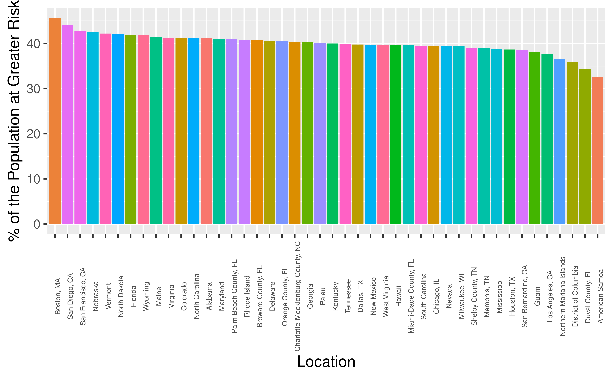
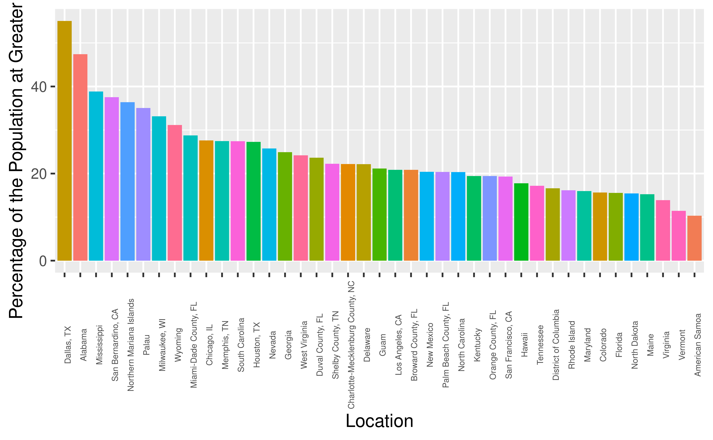
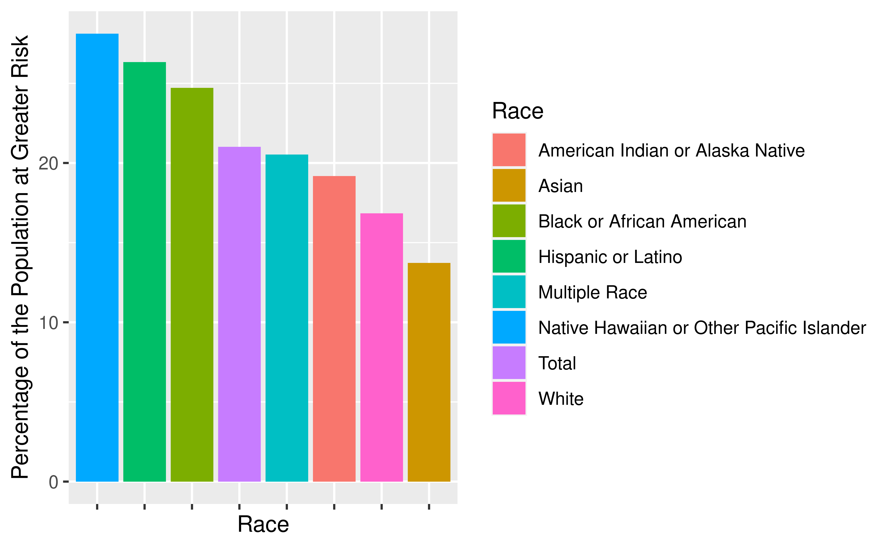

Youth Risk Behavior
Substance Abuse & Weight issues
Team Hull
Philip Wieczorek, Andrew Allan, Joshua Brown, Fengshou Miao
2021-12-02
Original Ideas
CDC data from Youth Risk Behavior Surveillance System. created on August 29th 2016 and were last updated March 29th 2019
Violence; Unprotected sexual practice; Substance abuse; Tobacco use; Weight Issues; Lack of physical activity.
2 of the 6 risk behaviors
Our goals with this project were to…
Discover whether risky behavior such as “substance abuse” and “weight issues” may appear more or less frequently among different categorical variables such as sex, race, etc.
Model how risky behavior trends throughout different grades
Map important or interesting trends that we found along the way
Our Dataset: Substance Abuse
## Rows: 33,408
## Columns: 36
## Groups: YEAR, LocationDesc, Sample_Size, Pop_at_Grisk, Sex, Race, Grade, Greater_Risk_Data_Value, Greater_Risk_High_Confidence_Limit, Greater_Risk_Low_Confidence_Limit, Lesser_Risk_Low_Confidence_Limit, Lesser_Risk_High_Confidence_Limit, GeoLocation, QuestionCode, LocationId [33,408]
## $ YEAR <int> 2017, 2011, 2013, 2017, 2011, …
## $ LocationAbbr <chr> "GU", "NM", "ND", "PW", "CM", …
## $ LocationDesc <chr> "Guam", "New Mexico", "North D…
## $ DataSource <chr> "YRBSS", "YRBSS", "YRBSS", "YR…
## $ Topic <chr> "Alcohol and Other Drug Use", …
## $ Subtopic <chr> "Alcohol Use", "Alcohol Use", …
## $ ShortQuestionText <chr> "Ever alcohol use", "Ever alco…
## $ Greater_Risk_Question <chr> "Ever drank alcohol", "Ever dr…
## $ Description <chr> "other than a few sips", "othe…
## $ Data_Value_Symbol <chr> "%", "%", "%", "%", "%", "%", …
## $ Data_Value_Type <chr> "Percentage", "Percentage", "P…
## $ Greater_Risk_Data_Value <dbl> NA, NA, NA, NA, NA, NA, NA, NA…
## $ Greater_Risk_Data_Value_Footnote_Symbol <lgl> NA, NA, NA, NA, NA, NA, NA, NA…
## $ Greater_Risk_Data_Value_Footnote <lgl> NA, NA, NA, NA, NA, NA, NA, NA…
## $ Greater_Risk_Low_Confidence_Limit <dbl> NA, NA, NA, NA, NA, NA, NA, NA…
## $ Greater_Risk_High_Confidence_Limit <dbl> NA, NA, NA, NA, NA, NA, NA, NA…
## $ Lesser_Risk_Question <chr> "Never drank alcohol", "Never …
## $ Lesser_Risk_Data_Value <dbl> NA, NA, NA, NA, NA, NA, NA, NA…
## $ Lesser_Risk_Data_Value_Footnote_Symbol <lgl> NA, NA, NA, NA, NA, NA, NA, NA…
## $ Lesser_Risk_Data_Value_Footnote <lgl> NA, NA, NA, NA, NA, NA, NA, NA…
## $ Lesser_Risk_Low_Confidence_Limit <dbl> NA, NA, NA, NA, NA, NA, NA, NA…
## $ Lesser_Risk_High_Confidence_Limit <dbl> NA, NA, NA, NA, NA, NA, NA, NA…
## $ Sample_Size <int> 30, 14, 0, 1, 16, 8, 7, 99, 0,…
## $ Sex <chr> "Male", "Total", "Male", "Fema…
## $ Race <chr> "Asian", "Asian", "White", "As…
## $ Grade <chr> "8th", "8th", "6th", "8th", "7…
## $ GeoLocation <chr> "(13.444304, 144.793731)", "(3…
## $ TopicId <chr> "C03", "C03", "C03", "C03", "C…
## $ SubTopicID <chr> "C14", "C14", "C14", "C14", "C…
## $ QuestionCode <chr> "M26", "M26", "M26", "M26", "M…
## $ LocationId <chr> "66", "35", "38", "204", "122"…
## $ StratID1 <chr> "S8", "S1", "S8", "S7", "S8", …
## $ StratID2 <chr> "R11", "R11", "R15", "R11", "R…
## $ StratID3 <chr> "G19", "G19", "G17", "G19", "G…
## $ StratificationType <chr> "Territory", "State", "State",…
## $ Pop_at_Grisk <dbl> NA, NA, NA, NA, NA, NA, NA, NA…Our Dataset: Weight Issues
## Rows: 40,032
## Columns: 36
## Groups: YEAR, LocationDesc, Sample_Size, Pop_at_Grisk, Sex, Race, Grade, Greater_Risk_Data_Value, Greater_Risk_High_Confidence_Limit, Greater_Risk_Low_Confidence_Limit, Lesser_Risk_High_Confidence_Limit, Lesser_Risk_Low_Confidence_Limit, GeoLocation, QuestionCode, LocationId [40,032]
## $ YEAR <int> 1995, 2001, 1999, 2013, 1999, …
## $ LocationAbbr <chr> "GU", "ME", "ND", "PW", "DA", …
## $ LocationDesc <chr> "Guam", "Maine", "North Dakota…
## $ DataSource <chr> "YRBSS", "YRBSS", "YRBSS", "YR…
## $ Topic <chr> "Weight Control", "Weight Cont…
## $ Subtopic <chr> "Weight Control", "Weight Cont…
## $ ShortQuestionText <chr> "Weight loss", "Weight loss", …
## $ Greater_Risk_Question <chr> "Were not trying to lose weigh…
## $ Description <chr> "NULL", "NULL", "NULL", "NULL"…
## $ Data_Value_Symbol <chr> "%", "%", "%", "%", "%", "%", …
## $ Data_Value_Type <chr> "Percentage", "Percentage", "P…
## $ Greater_Risk_Data_Value <dbl> NA, NA, NA, NA, NA, NA, NA, NA…
## $ Greater_Risk_Data_Value_Footnote_Symbol <lgl> NA, NA, NA, NA, NA, NA, NA, NA…
## $ Greater_Risk_Data_Value_Footnote <lgl> NA, NA, NA, NA, NA, NA, NA, NA…
## $ Greater_Risk_Low_Confidence_Limit <dbl> NA, NA, NA, NA, NA, NA, NA, NA…
## $ Greater_Risk_High_Confidence_Limit <dbl> NA, NA, NA, NA, NA, NA, NA, NA…
## $ Lesser_Risk_Question <chr> "Were trying to lose weight", …
## $ Lesser_Risk_Data_Value <dbl> NA, NA, NA, NA, NA, NA, NA, NA…
## $ Lesser_Risk_Data_Value_Footnote_Symbol <lgl> NA, NA, NA, NA, NA, NA, NA, NA…
## $ Lesser_Risk_Data_Value_Footnote <lgl> NA, NA, NA, NA, NA, NA, NA, NA…
## $ Lesser_Risk_Low_Confidence_Limit <dbl> NA, NA, NA, NA, NA, NA, NA, NA…
## $ Lesser_Risk_High_Confidence_Limit <dbl> NA, NA, NA, NA, NA, NA, NA, NA…
## $ Sample_Size <int> 0, 0, 4, 0, 9, 0, 0, 14, 17, 5…
## $ Sex <chr> "Female", "Total", "Male", "Fe…
## $ Race <chr> "Multiple Race", "White", "Asi…
## $ Grade <chr> "6th", "6th", "7th", "Total", …
## $ GeoLocation <chr> "(13.444304, 144.793731)", "(4…
## $ TopicId <chr> "C33", "C33", "C33", "C33", "C…
## $ SubTopicID <chr> "C34", "C34", "C34", "C34", "C…
## $ QuestionCode <chr> "M39", "M39", "M39", "M38", "M…
## $ LocationId <chr> "66", "23", "38", "204", "126"…
## $ StratID1 <chr> "S7", "S1", "S8", "S7", "S8", …
## $ StratID2 <chr> "R16", "R15", "R11", "R15", "R…
## $ StratID3 <chr> "G17", "G17", "G18", "G1", "G1…
## $ StratificationType <chr> "Territory", "State", "State",…
## $ Pop_at_Grisk <dbl> NA, NA, NA, NA, NA, NA, NA, NA…Substance Abuse over Time
## `summarise()` has grouped output by 'Sex'. You can override using the `.groups` argument.
Substance Abuse over Time
Females at lower risk overall than men to abuse substances
Risk of substance abuse has been going down over time
- Although there was a slight resurgence in the latest year collected
Weight Issues and Geography

Weight Issues and Geography
Overall, USA has a similar incidence of “weight issues” across the board
At first glance, seems as if coasts (generally but not always more urban) exhibit more weight issues
Weight Issues and Geography
Some spread of rural across the board, a number of islands s.a. Northern Mariana Islands and especially American Samoa trending towards fewer weight issues
This could have to do with culture; heavier weight more accepted/admired in Samoan culture
Percentage Describing Themselves as Overweight
## `summarise()` has grouped output by 'Sex'. You can override using the `.groups` argument.
Percentage Describing Themselves as Overweight
Females tend to believe they are overweight more frequently than men
Females have trended down a bit, but has gone up a little bit in recent years, although remaining below 30%
Males have maintained between 22% and 25%, not much variation over time
Substance Abuse Issues and Geography
Substance_Abuse_Edited %>%
group_by(LocationDesc) %>%
drop_na(Greater_Risk_Data_Value) %>%
summarise(bingo = weighted.mean(Greater_Risk_Data_Value, Sample_Size)) %>%
ggplot(aes(x = reorder(LocationDesc, -bingo) , y = bingo, fill = LocationDesc)) +
geom_bar(stat = "identity", position = "dodge") +
theme(axis.text.x = element_text(angle = 90, size = 5), legend.position = "None") +
xlab("Location") +
ylab("Percentage of the Population at Greater Risk")
Substance Abuse Issues and Geography
Dallas and Alabama are the areas with the most substance abuse issues by quite a bit.
American Samoa is the least
There is a greater range of substance abuse issues in these areas than weight issues.
Substance Abuse Issues by Race
Substance_Abuse_Edited %>%
group_by(Race) %>%
drop_na(Greater_Risk_Data_Value) %>%
summarise(bingo = weighted.mean(Greater_Risk_Data_Value, Sample_Size)) %>%
ggplot(aes(x = reorder(Race, -bingo) , y = bingo, fill = Race)) +
geom_bar(stat = "identity", position = "dodge") +
theme(axis.text.x = element_blank()) +
xlab("Race") +
ylab("Percentage of the Population at Greater Risk")
Substance Abuse Issues by Race
Native American or Other Pacific Islander, Hispanic or Latino and Black or African American have the highest percentage of their populations with substance abuse issues.
The race with the lowest percentage of substance abuse issues is Asian.
What Could We Have Included?
Comparing common trends between the two datasets (Is geography correlated?)
Comparing all 6 risk factors in some way. or comparing the 2 risk factors over different school levels.
What Could We Have Included?
Looking for more opportunities to find correlation, regression, other trends.
Perhaps creating a literal map with a “heat map” with an additional package.
Would give us slightly more precise visualization with respect to geography.
Overall Conclusions
Data Collection
Our data was collected from the Youth Risk Behavior Surveillance System(YRBSS), for the Centers for Disease Control and Prevention (CDC) and can be vied on the CDCs website.
Females have greater incidence of “weight issues”
Males more likely to be exposed to “substance abuse”
Data Collection
Some progress made in both, but still plaguing our generation
Important topic to discuss –> societal relevance, mapping the impact of body positivity and substance abuse reduction campaigns